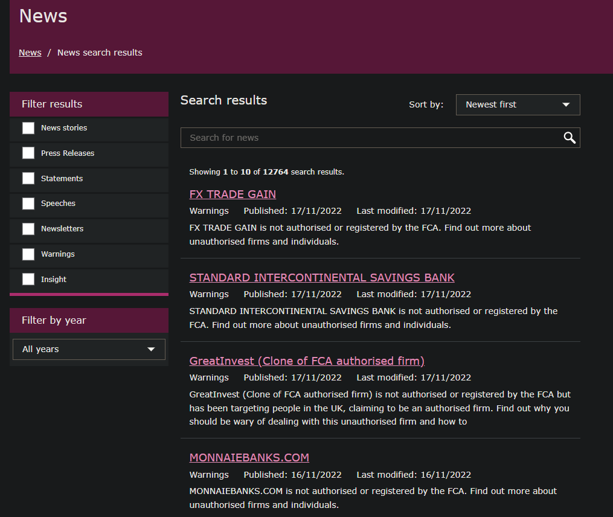

FCA Database Generation
The FCA (Financial Conduct Authority) is the financial regulator in the UK and is a great case study on how webscraping can be utilised to gather publically available 3rd party data. We'll go through the process of building a repository of FCA news reporting since the website inception!
Firstly, when we interact with a website, we need to send requests to the server and network that the websites sits on in order retrieve information contained in the website. We can think of it as an introduction before we start speaking to the site!
This information is called a user-request and simply consists of the application, operating system, vendor and version of the request we sending. However, we need to be clever in our scrape and mask the fact that we are using python.
The default python request is python-requests/2.28.1 which is commonly blocked so it will be better to mask our requests to act as if we're requesting via a major browser.
headers = {
'User-Agent': 'Mozilla/5.0 (Windows NT 10.0; Win64; x64) AppleWebKit/537.36 (KHTML, like Gecko) Chrome/107.0.0.0 Safari/537.36'
}
We'll mask that we're using chrome on a windows operating system that is compatible with other browsers like KHTML, Geko and Safari.
We'll be scraping information from the news article search results as shown below, as well as going inside each news item link and scraping the detail contained in the article.

To do this, we'll need to establish a function to retrive and store all the information for each news item on the search page. We'll call the function scrape_item.
def scrape_item( news_item:object , titles:np.array , item_descs:np.array , meta_types:np.array , meta_pubdates:np.array , meta_moddates:np.array ) \
-> tuple[ np.array , np.array , np.array , np.array , np.array ] :
"""
Adds selected html elements from news_item object into numpy arrays.
Args:
titles (np.array): array containing all the page summaries as string elements
item_descs (np.array): array containing body of the page as a string
meta_types (np.array): array containing all the meta information onthe type of news article
meta_pubdates (np.array): array containing all the meta for the publish dates of the news articles
meta_moddates (np.array): array containing all the meta for the modified dates of the news articles
Returns:
tuple[ np.array , np.array , np.array , np.array , np.array ]: Input arrays are returned with new appended results
"""
#title
title = news_item.find('h4' , class_ = 'search-item__title').text.strip()
titles = np.append(titles , title)
#news item description
item_desc = news_item.find('div' , class_ = 'search-item__body').text.strip()
item_descs = np.append(item_descs , item_desc)
# meta item type
meta_type = news_item.find('span' , class_ = 'meta-item type').text.strip()
meta_types = np.append(meta_types , meta_type)
# meta item publish date
meta_pubdate = news_item.find('span' , class_ = 'meta-item published-date').text.strip()[11:]
meta_pubdates = np.append(meta_pubdates , meta_pubdate)
# meta item modified date
meta_moddate = news_item.find('span' , class_ = 'meta-item modified-date').text.strip()[15:]
meta_moddates = np.append(meta_moddates , meta_moddate)
return titles , item_descs , meta_types , meta_pubdates , meta_moddates
As well as the news item search results, we also need to create a function to pull information from inside the news item. We'll call that function scrape_page
def scrape_page( page_summaries:np.array , page_bodies:np.array ) -> tuple[np.array , np.array]:
"""
Adds html selected html element from new item webpage into numpy arrays.
Args:
page_summaries (np.array): array containing all the page summaries as string elements
page_bodies (np.array): array containing body of the page as a string
Returns:
tuple[np.array , np.array]: both inputs are returned with the new elements appended.
"""
# webpage summary
page_summary = soup.find('section' , class_='copy-highlighted component fca-colour--6c1d45').text.strip()
page_summaries = np.append(page_summaries , page_summary)
# webpage body
page_body = soup.find('section' , class_='copy-block default').text.strip()
page_bodies = np.append(page_bodies , page_body)
return page_summaries , page_bodies
All that's left to do is to create a script that goes through each page and extracts all our desired information!
# main
total_pages=12738
pages= np.arange(1,total_pages,10)[-1]
titles , item_descs , meta_types , meta_pubdates , meta_moddates , page_summaries , page_bodies = np.array([]) , \
np.array([]) , np.array([]) , np.array([]) , np.array([]) , np.array([]) , np.array([])
for p in pages:
# parse the html from the link
r = requests.get('https://www.fca.org.uk/news/search-results?start={}'.format(p))
soup = BeautifulSoup(r.content , 'lxml')
# get all news items on page
news_items = soup.find_all('li' , class_ = 'search-item')
#iterate through each news item to extract and store info
for news_item in news_items:
titles , item_descs , meta_types , meta_pubdates , meta_moddates = scrape_item(
news_item,
titles ,
item_descs ,
meta_types ,
meta_pubdates ,
meta_moddates
)
# news item link
webpage_detailed = news_item.find('a', href=True)['href']
# get website html
r = requests.get(webpage_detailed)
soup = BeautifulSoup(r.content , 'lxml')
page_summaries , page_bodies = scrape_page( page_summaries , page_bodies )
df = pd.DataFrame({
'title':titles,
'item_description':item_descs,
'type':meta_types,
'publish_date':meta_pubdates,
'modified_date':meta_moddates,
'page_summary':page_summaries,
'page_body':page_bodies
}).to_csv( os.getcwd()+'\FCA_newsreports.csv' )